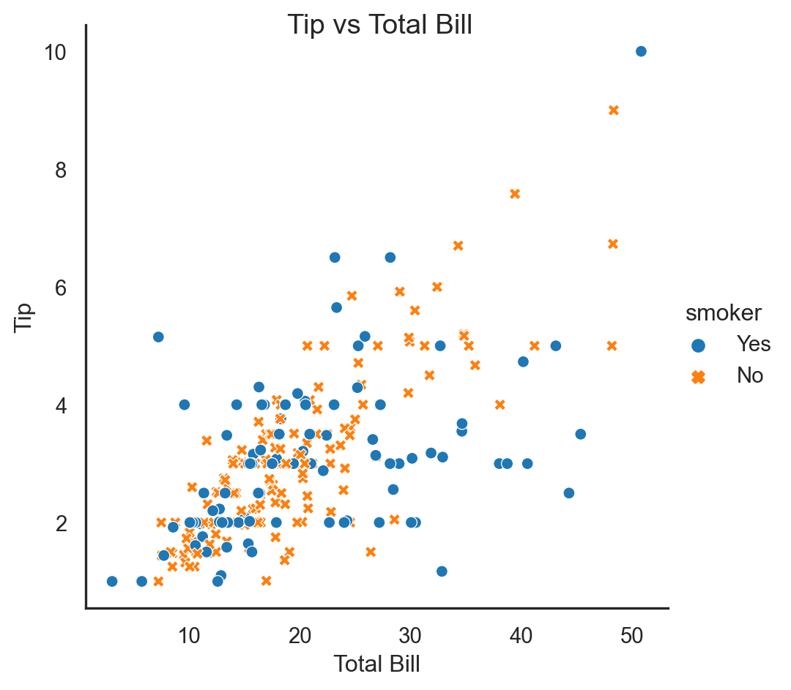
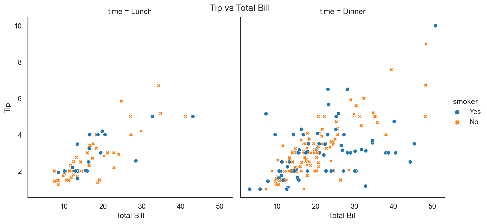
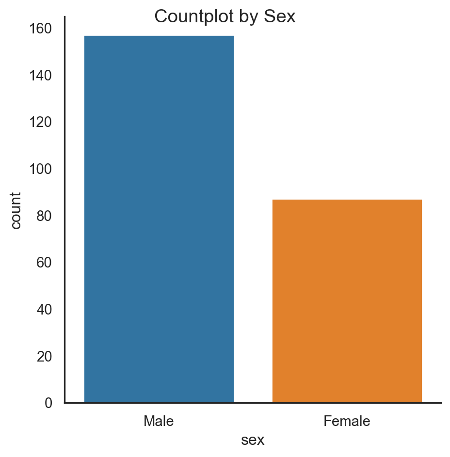
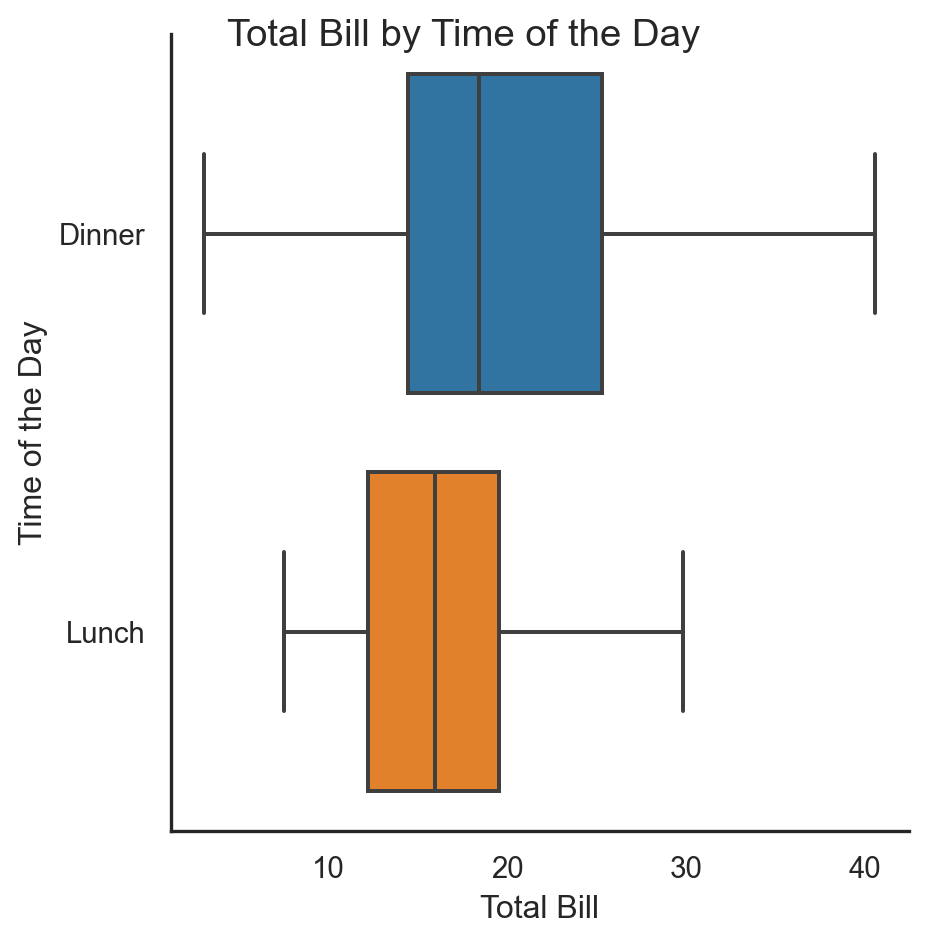
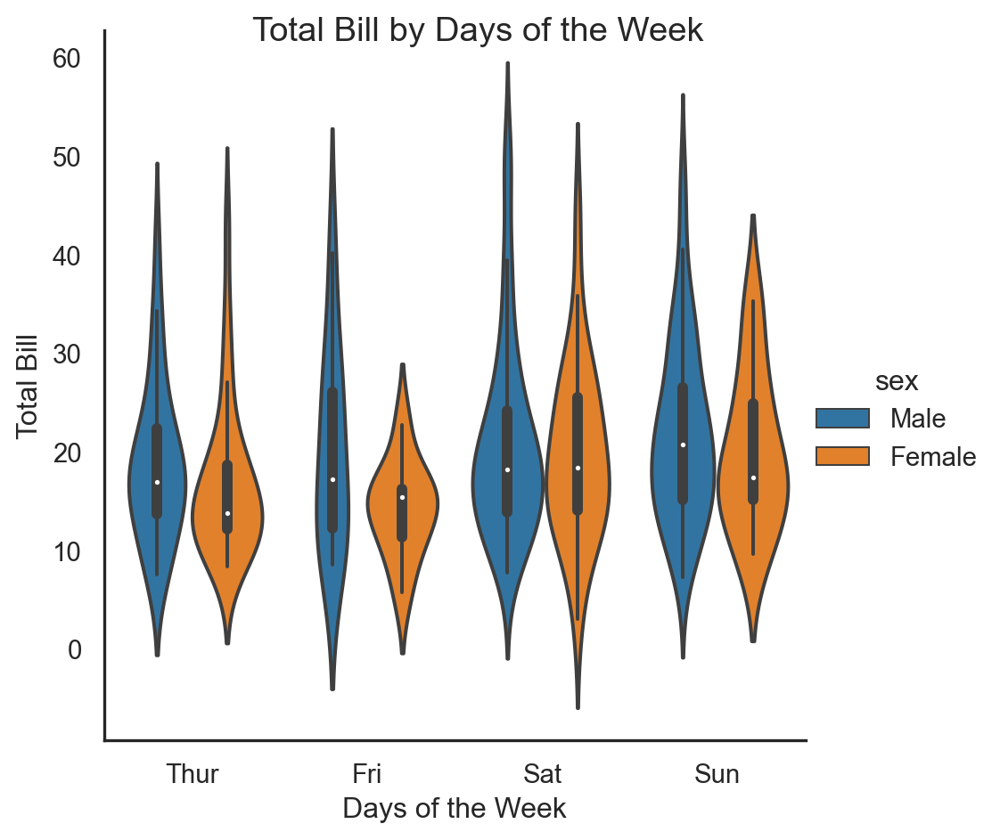
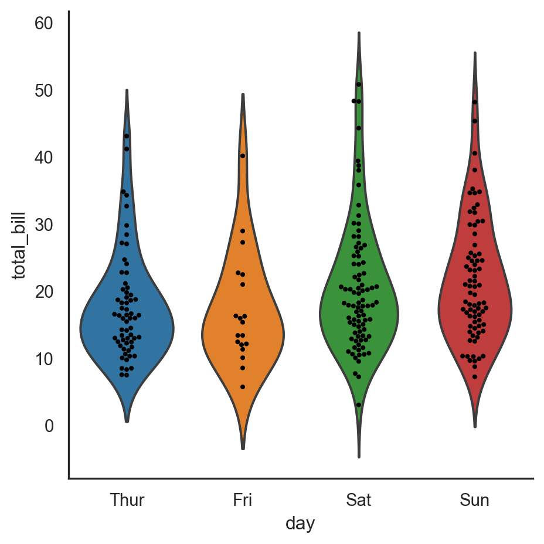

This tutorial serves two purposes: 1) showcase Quarto, the next generation of RMarkdown, and 2) illustrate how to visualize data in Python with seaborn.
So, why Quarto?
According to its website, quarto.org, Quarto“is an open-source scientific and technical publishing system built on Pandoc.”
Author documents as plain text markdown or Jupyter notebooks;
Publish high-quality articles, reports, presentations, websites, blogs, and books in HTML, PDF, MS Word, ePub, and more; and
Author with scientific markdown, including equations, citations, crossrefs, figure panels, callouts, advanced layout, and more. (https://quarto.org/)
And why seaborn?
Seaborn is a Python data visualization library built on top of matplotlib.
Seaborn is a Python data visualization library based on matplotlib. It provides a high-level interface for drawing attractive and informative statistical graphics. (https://seaborn.pydata.org/)
In addition to the aforementioned motivations for this tutorial, this tutorial was also inspired by Gary-Gregoire Coquillo’s February 5, 2020 post on LinkedIn. A Copy of Gary-Gregoire’s article is located here: https://github.com/tongakuot/python_tutorials/blob/main/Exploring%20Seaborn%E2%80%99s%20Built-in%20Dataset.pdf.
Now let’s get started.
Loading the Libraries
Here we will load seaborn, matplotlib, pandas, and numpy.
Code
# Import librariesimport pandas as pdimport numpy as np# Install and load the seaborn package#!pip install seaborn; the alias "sns" stands for Samuel Norman Seaborn from "The West Wing" television showimport seaborn as snsimport matplotlib.pyplot as plt# Initialize seaborn styling; contextsns.set_style('white')sns.set_context('notebook')
Loading the Dataset
In this tutorial, we will use the tips dataset for our purpose.
Code
tips_df = sns.load_dataset('tips')
Inspecting the data
Code
# Inspect the first 5 rows.tips_df.head()
total_bill
tip
sex
smoker
day
time
size
0
16.99
1.01
Female
No
Sun
Dinner
2
1
10.34
1.66
Male
No
Sun
Dinner
3
2
21.01
3.50
Male
No
Sun
Dinner
3
3
23.68
3.31
Male
No
Sun
Dinner
2
4
24.59
3.61
Female
No
Sun
Dinner
4
Code
# Inspect the last 5 rows.tips_df.tail()
total_bill
tip
sex
smoker
day
time
size
239
29.03
5.92
Male
No
Sat
Dinner
3
240
27.18
2.00
Female
Yes
Sat
Dinner
2
241
22.67
2.00
Male
Yes
Sat
Dinner
2
242
17.82
1.75
Male
No
Sat
Dinner
2
243
18.78
3.00
Female
No
Thur
Dinner
2
Checking for Missing Values
Code
# Check if there are missing values.tips_df.isna().sum()
total_bill 0
tip 0
sex 0
smoker 0
day 0
time 0
size 0
dtype: int64
There are no missing values.
Performing a Quick Summary
Code
# Summarizing the data to get better understanding of our dataset; transpose the results for better view.tips_df.describe().T
count
mean
std
min
25%
50%
75%
max
total_bill
244.0
19.785943
8.902412
3.07
13.3475
17.795
24.1275
50.81
tip
244.0
2.998279
1.383638
1.00
2.0000
2.900
3.5625
10.00
size
244.0
2.569672
0.951100
1.00
2.0000
2.000
3.0000
6.00
Code
# Group by sex and smoker columns; compute the mean and round to 2 decimal places# Select desired columns.cols = ['sex', 'smoker', 'day', 'total_bill', 'tip']df_1 = (tips_df [cols] .groupby(['sex', 'smoker', 'day']) .mean() .round(2))# View the outputadf_1
total_bill
tip
sex
smoker
day
Male
Yes
Thur
19.17
3.06
Fri
20.45
2.74
Sat
21.84
2.88
Sun
26.14
3.52
No
Thur
18.49
2.94
Fri
17.48
2.50
Sat
19.93
3.26
Sun
20.40
3.12
Female
Yes
Thur
19.22
2.99
Fri
12.65
2.68
Sat
20.27
2.87
Sun
16.54
3.50
No
Thur
16.01
2.46
Fri
19.37
3.12
Sat
19.00
2.72
Sun
20.82
3.33
Code
# Group by sex and smoker columns; compute the mean and round to 2 decimal places.df_2 = (tips_df [cols] .groupby(['sex', 'smoker']) .mean() .round(2))# View the outputadf_2
total_bill
tip
sex
smoker
Male
Yes
22.28
3.05
No
19.79
3.11
Female
Yes
17.98
2.93
No
18.11
2.77
Code
# Group by the sex column; compute the mean and round to 2 decimal placesdf_3 = (tips_df [cols] .groupby(['sex']) .mean() .round(2))# View the outputadf_3
total_bill
tip
sex
Male
20.74
3.09
Female
18.06
2.83
Visualizing Data with seaborn
Let’s begin with the scatterplot. However, we will use relplot instead of scatterplot because the relplot allows us to create subplots in a single figure.
Code
# Plot a scatterplot with the relplot() functionsc_g = sns.relplot(x ='total_bill', y ='tip', data = tips_df, kind ='scatter', hue ='smoker', style ='smoker' )# Add the titlesc_g.figure.suptitle('Tip vs Total Bill')sc_g.set(xlabel ='Total Bill', ylabel ='Tip')# Show the plot.plt.show()

Plotting the Bargraph
Code
# Plot the countplot.count_g = sns.catplot( x ='sex', data = tips_df, kind ='count')count_g.figure.suptitle('Countplot by Sex')plt.show()

Code
bar_g = sns.catplot(x ='day', y ='total_bill', data = tips_df, kind ='bar' )# Add the titlebar_g.figure.suptitle('Total Bill by Days of the Week')bar_g.set(xlabel ='Days of the Week', ylabel ='Total Bill')plt.show()

Plotting the Boxplot
Code
bp_g = sns.catplot(x ='total_bill', y ='time', data = tips_df, kind ='box', order = ['Dinner', 'Lunch'] )# Add the titlebp_g.figure.suptitle('Total Bill by Time of the Day')bp_g.set(xlabel ='Total Bill', ylabel ='Time of the Day')plt.show()
Plotting the Boxplot without Outliers
Code
bp_g = sns.catplot(x ='total_bill', y ='time', data = tips_df, kind ='box', order = ['Dinner', 'Lunch'], sym ='' )# Formatting the plotbp_g.figure.suptitle('Total Bill by Time of the Day')bp_g.set(xlabel ='Total Bill', ylabel ='Time of the Day')# Display the plotplt.show()

Code
# Boxplot by smoker column.b_hue_g = sns.catplot(x ='day', y ='total_bill', data = tips_df, kind ='box', sym ='', hue ='smoker' )# Formatting the plotb_hue_g.figure.suptitle('Total Bill by Days of the Week')b_hue_g.set(xlabel ='Day of the Week', ylabel ='Total Bill')# Display the plotplt.show()
Plotting the Violin Plot
Code
# Plot a Violin Plot.v_g = sns.catplot(x ='day', y ='total_bill', data = tips_df, kind ='violin', hue ='sex' )# Formattingv_g.figure.suptitle("Total Bill by Days of the Week")v_g.set(xlabel ='Days of the Week', ylabel ='Total Bill')# Display the plot plt.show()

Plotting the Swarmplot
Code
g = sns.catplot(x ='day', y ='total_bill', data = tips_df, kind ='violin', inner =None )# Plot a swarm plotsns.swarmplot(x ='day', y ='total_bill', color ="k", size =3, data = tips_df, ax = g.ax )# Display the plotplt.show()
Code
# Plot a swarm plotsns.catplot(x ='day', y ='total_bill', col ='time', aspect =.8, data = tips_df, kind ='swarm', hue ='smoker' )# Display the plotplt.show()
Plotting the Linear Regression Plot
Code
# Plot histogramg = sns.lmplot(x ='total_bill', y ='tip', hue ='smoker', col ='time', data = tips_df, markers = ['o', '*'], palette ='Set1');plt.show()

Code
sns.jointplot(x ='total_bill', y ='tip', data = tips_df, kind ='reg');# Display the plotplt.show()